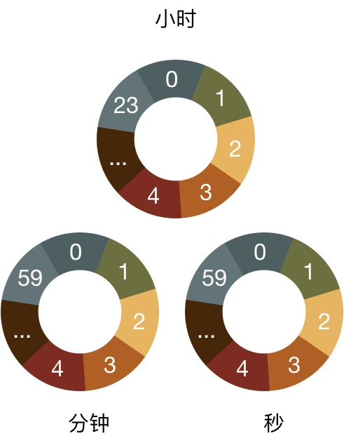

什么是时间轮
- 调度模型
时间轮是为解决高效调度任务而产生的调度模型 - 数据结构
通常由 hash table 和 链表 实现的数据结构 - 延时任务、周期性任务
应用场景主要在延迟大规模的延时任务、周期性的定时任务等。目前在 Kafka、caffeine、netty 等各种任务调度功能中作为调度器使用。
为什么用时间轮？
相比传统的队列形式的调度器来说，时间轮能够批量高效的管理各种延时任务、周期任务、通知任务等等。
我们对比传统的简单调度器实现与时间轮实现，发现时间轮的效能更高效。
（可能会有同学想问，为什么简单时间轮都是 O(1) 的时间复杂度，为什么还需要后面的时间轮实现呢？ 哈哈哈哈哈，后面会说下简单时间轮实现的问题）
定时器
我们抽象一个调度器模型中，包含如下接口实现：
- 启动定时器
加入调度任务 - 终止定时器
终止调度任务 - 周期清算
每一个执行周期对调度器中任务的处理 - 过期处理
任务过期时的回调函数
定时器这里这是调度模型的实例化，这里只讨论定时任务的处理模式，其他周期任务、通知任务等实现基础原理于此相同，只是会有更具体的优化方案。
无序列表定时器
由链表实现，任务在调度器中存储将要过期的时间，无序存储。
- 启动定时器： 直接在链表后面 push ，时间复杂度 O(1)
- 终止定时器： 直接在链表中删除节点，时间复杂度 O(1)
- 周期清算: 需要遍历链表中所有节点，时间复杂度 O(n)
实例：
时间周期：1s，过期判断：剩余 0s 过期
初始化定时器，在链表后面直接 push 节点，节点中存储的为将要过期的剩余时间。这里初始化为剩余 5s、3s、1s、7s、2s、1s。
执行一个周期，经过处理后，如下：
遍历定时器中所有节点，将剩余时间为 0s 的任务进行过期处理
在执行一个周期，处理如下，以此类推
有序列表定时器
与无需列表定时器相比，都是又链表实现，但存储的是绝对的过期时间
- 启动定时器： 有序插入，比较时间按照时间大小有序插入，时间复杂度 O(n)
- 终止定时器： 在链表中查找任务，删除节点，时间复杂度 O(n)
- 周期清算: 找到执行最后一个过期任务即可，无需遍历整个链表，时间复杂度 O(1)
实例
时间周期：1m，过期判断：当前时间 >= 任务时间
初始化链表，插入任务 「12:41:30」 ，有序插入
比较前后节点，将该任务插入到 第1节点 和 第2节点 之间
执行一个时间周期，发现 任务1 和 任务2 过期，进行过期处理，移出任务
再执行两个时间的情况如下，期间 任务3 过期，进行了过期处理和移出操作，后续操作类似
定时器树
不难看出，「有序列表定时器」的性能瓶颈在于插入时的任务排序，「定时器树」则在「有序列表定时器」的基础上进行优化，以有序树的形式进行任务存储。
- 启动定时器： 有序插入，比较时间按照时间大小有序插入，时间复杂度 O($log_n$)
- 终止定时器： 在链表中查找任务，删除节点，时间复杂度 O($log_n$)
- 周期清算: 找到执行最后一个过期任务即可，无需遍历整个链表，时间复杂度 O(1)
实例
基础原理与「有序列表定时器」 相同，聪明的读者不需要举例了吧~ （主要是树的图太难画了 (╯‵□′)╯︵┻━┻）
时间轮怎么实现的？
简单时间轮实现
由一个 hash table 和简单链表实现，hash table 的 key 为时间单位，value 为简单链表的 root 节点。链表解决 hash 冲突
说明：
- max interval: key代表的 slot 需要固定的最大值
- 每一个 slot 代表一个时间单位
- 移动到 slot 处理所有 task
- 启动定时器： 直接 hash 到链表后面 push ，时间复杂度 O(1)
- 终止定时器： 直接 hash 到链表中删除节点，时间复杂度 O(1)
- 周期清算: 执行 hash 链表中的所有节点的过期处理，时间复杂度认为是 O(1)
简单时间轮实现的最大问题是内存空间占用，当 max interval 为32位 int 时，需要有$2^{32}$个 slot
极端举例，有个 timestamp = 1 时启动的定时器，和一个 timestamp 为 100000 的任务，则需要有 slot 至少为 100000 定时器，来执行这一个任务
所以上面说的虽然简单时间轮性能最高，但是还会有适用场景更广泛的实现
实例
时间周期：1s，过期判断：当前时间 >= 任务时间
在12:00:00启动，直接插入 hash 的链表中，这里插入两个「12:00:00」任务 对应的 key 中，
当执行两个时间单位后，「12:00:10」slot 中的任务全部处理完成，进行了移出操作
「12:00:12」的任务判断过期，进行过期处理和移出操作
有序定时器列表的哈希轮
简单时间轮的 max interval 限制了其适用场景，这里对此进行优化。
一个 hash table 构成的循环缓冲区 和 上面提到的「有序列表定时器」来实现
说明：
- 循环缓冲区
- 每一个 slot 代表一个时隙
- 有序列表解决冲突
循环缓冲区中的 key 为 hash 值
- 启动定时器： 直接 hash 到链表,进行有序插入，时间复杂度 O(1) 最坏为 O($log_n$)
- 终止定时器： 直接 hash 到链表,查找删除节点，时间复杂度 O(1)
- 周期清算: 执行 hash 链表中的所有节点的过期处理，时间复杂度认为是 O(1)
极端举例，当所有任务 hash 到一个 slot 中时，时间复杂度 = 「有序列表定时器」时间复杂度
举例
时间周期：1s，过期判断：当前时间 >= 任务时间 , hash 函数：任务秒数/10*10，例如 hash(12:00:01) = 00,hash(12:02:05) = 00
当然这个 hash 函数只是举例(这样更好理解也好画图 O(∩_∩)O~~)
12:00:00启动时间轮，插入任务「12:00:01」「12:02:05」「12:15:00」
执行到 12:10:12 时，共执行了612个周期清算，期间 任务「12:00:01」「12:02:05」「12:09:21」过期，执行了过期处理和移出操作
无序定时器列表的哈希轮
「有序定时器列表的哈希轮」的变体，存储的不是绝对的到期时间，而是每个任务需要在时间轮中遍历的环数
一个 hash table 构成的循环缓冲区 和 上面提过的「无序列表定时器」实现
说明：
循环缓冲区
每一个 slot 代表一个时隙
每个 task 经过 hash 转换为需要轮转的圈数
slot 数量为 s,任务剩余时间 t，环数为 c，slot key 为 k,当前环数为bc,当前slot key 为 bk
则 c(环数) = t / s - bc , k(slot key) = t % s - bk
- 启动定时器： 直接 hash 到链表后面 push ，时间复杂度 O(1)
- 终止定时器： 直接 hash 到链表中删除节点，时间复杂度 O(1)
- 周期清算: 执行 hash 到的「无序列表定时器」的周期清算，平均来看，时间复杂度认为是 O(1)
举例
时间周期：1s，过期判断：剩余轮数 0 , hash 函数：当前时间秒数， slot num：60
当然这个 hash 函数只是举例(这样更好理解也好画图 O(∩_∩)O~~)
12:00:00 时启动定时器。
插入任务「12:41:00」时，处理为 c(环数) = (12:41:00 - 12:00:00)/60 - 0 = 41,k(slot key) = (12:41:00 - 12:00:00)%60 - 0= 0
同上，插入各种任务后时间轮如下所示, 举例 任务「12:20:01」c = (12:20:01 - 12:00:00)/60 - 0 = 20,k = (12:20:01 - 12:00:00)%60-0 = 1
每一个执行周期到对应的 slot 时，该 slot 对应的链表中所有节点剩余轮数-1
执行到 12:19:01 时，时间轮情况如下
期间，时间轮转动19圈2格， 任务「12:41:00」中对应的剩余轮树 为 41-20 ，slot 「1」也刚刚到第20次到达，所有节点剩余轮数-1，判断为0过期
多级时间轮
处理由简单的定时轮方法引起的存储器问题的另一种方式是在层次结构中使用多个定时轮，由多个层级来进行多次 hash
说明：
多级
子轮转动一圈，父轮转动一格
从父向子前进，无子过期
当前时间轮 slot num 为 cs，所有下级 slot 的总值为 ps ,插入slot key 为 k,任务绝对时间戳为 t
则 k = t / ps % cs
- 启动定时器： 直接 hash 到链表后面 push ，时间复杂度 O(1)
- 终止定时器： 直接 hash 到链表中删除节点，时间复杂度 O(1)
- 周期清算: 执行 hash 到的列表的周期清算，平均来看，时间复杂度认为是 O(1)
举例
我们来建立一个1天的定时器，时间轮分为3个，小时轮(24 slot)、分钟轮(60 slot)、秒轮(60 slot)
方便理解
时间周期：1s，过期判断：无子轮移动
创建的时间轮如下，看起来很想我们的手表，秒针转一起，分针转一格，分针转一圈，小时转一格

插入一个任务「03:59:04」,从最上方的轮子开始插入，先插入到小时轮中的k = 3的 slot 中
时间轮小时轮轮转到「3」slot 时，任务「03:59:04」从小时轮向子轮移动，插入到分钟轮的 k = 59的 slot 中
当分钟轮移动到「59」slot 时，任务「03:59:04」从分钟轮向子轮移动，插入秒轮的 k = 4 的 slot 中
当秒轮移动到「4」slot 时，任务「03:59:04」无子轮可移动，则认为过期
总结
上面介绍了关于各种定时器的实现 ，当然如果要实际应用的话，还需要针对业务场景对时间轮进行针对性的优化。不过我们只要搞懂原理，基础的理论是不会变的。
如果有任何问题，欢迎 email 到 pzbhellp@gmail.com 或留言进行讨论
参考
http:/www.cs.columbia.edu/~nahum/w6998/papers/sosp87-timing-wheels.pdf
https:/www.lpnote.com/2017/11/15/hashed-and-hierarchical-timing-wheels/
生活不仅有眼前的苟且，还有永远读不懂的诗和到不了的远方~
# 防止 markdownlint 报错